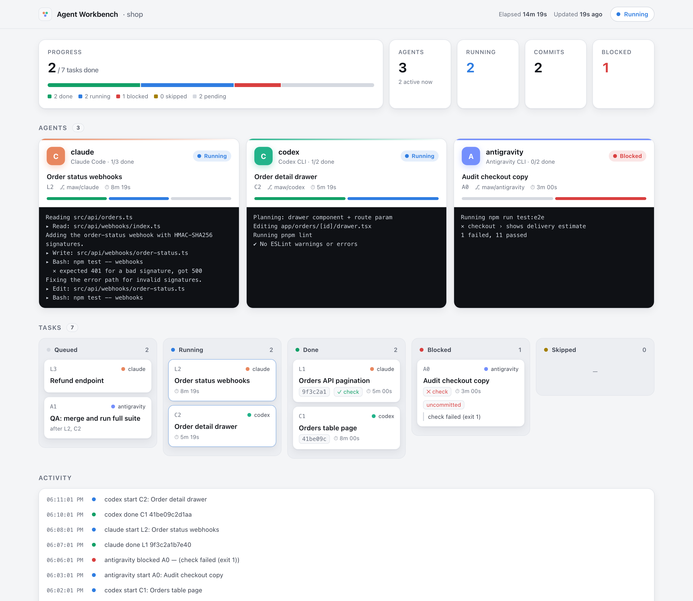

Multi-Agent Workbench
Run Claude Code, Codex and Antigravity in parallel. Each agent gets its own git worktree and task queue; you get real commits, check results and a live dashboard.

The live dashboard that opens when you run maw.
Install
npm install -g multi-agent-workbench cd your-project maw init # starter tasks.json maw doctor # agents installed and logged in? maw # run; live dashboard opens in your browser
Warning: agents run with permission prompts disabled inside their worktrees. Use it only where that is acceptable, and review every commit before merging.
What it does
- One queue per owner; queues run in parallel, tasks in a queue run in order
- Worktrees and branches (
maw/<owner>) created automatically depends_onbetween tasks across agentscheckcommands that must pass for a task to count as done- Commits read from git, plus uncommitted-change detection
- Live dashboard opens automatically: agents, tasks, commits and output
- Status file and per-task logs
tasks.json
[
{ "id": "L1", "owner": "claude", "task": "Orders API",
"prompt": "Add GET /api/orders. Run tests and commit.", "check": "npm test -- orders" },
{ "id": "C1", "owner": "codex", "task": "Orders page",
"prompt": "Build the orders page. Run lint and commit." },
{ "id": "A1", "owner": "antigravity", "command": "agy", "depends_on": ["L1", "C1"],
"prompt": "Merge maw/claude and maw/codex, run all tests, fix clear bugs, commit." }
]
Commands
maw init | Create a starter tasks.json |
maw doctor | Check agents are installed and logged in (exit 1 if not) |
maw run [--dry-run] | Run and open the dashboard, or validate and print the plan |
maw status | Summarize the last run |
maw dashboard | Reopen the status page for a finished run |
maw install-skill | Install the planning skill for Codex and Claude Code |
Use as a skill
maw install-skill
Then in Codex: Use $multi-agent-workbench to split this into micro-tasks for Codex, Claude and Antigravity. In Claude Code: /multi-agent-workbench.